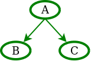

A resolution on control-group network filters
One of the strongest worries raised in January had to do with how filter programs at multiple levels of the control-group hierarchy interact. Consider a simple hierarchy like that shown to the right; group A is

at the top level, while groups B and C are contained within it. What happens to a process contained within B if filter programs are attached at both A and B? In the original implementation, only the program attached at the lower level (B) would be run. As a result, any process that had the ability to attach a program to B would be able to override any restrictions imposed at higher levels of the hierarchy. In some settings, that may be desirable behavior but, in others, it could be a security issue.This is an important detail to get right from the outset; if programs come to rely on the behavior described above, it may prove impossible to change in the future without breaking working systems. So there was a certain amount of back-and-forth over whether this behavior was problematic or not and how urgently it needed to be changed. Then things went quiet for a while, and it appeared that 4.10 would ship with this behavior. And, indeed, that might have happened if 4.10 had, as most had expected, been released on February 12.
A few days before that date, Alexei Starovoitov posted a patch aimed at addressing the objections to the 4.10 behavior. It modifies the bpf() system call used to attach a filter program to a control group, adding a new flag called BPF_F_ALLOW_OVERRIDE. If the flag is present when a filter program is installed, a process attached to a lower control group will be able to override that program by attaching a new program at a lower level. So, if a filter program is attached to group A above with this flag set, it will be possible to override that program in groups B and C by attaching new filter programs there. If the flag is absent, instead, it will not be possible to attach programs to those lower groups at all.
The BPF_F_ALLOW_OVERRIDE flag, in other words, implements the current 4.10 semantics for the groups below the group where a program is attached. The flag is not set by default, though, so the default behavior has changed to prevent a program from being overridden in this way. That gives system administrators control over how this behavior is handled while defaulting to a more secure mode and preventing code from relying on the unconditional ability to override packet-filter programs on control groups.
In response to the original patch, Andy Lutomirski, who raised most of the concerns about the original interface, suggested one change: if the filter program installed at A sets BPF_F_ALLOW_OVERRIDE, any programs installed lower in the hierarchy should be required to have that flag set as well. That restriction will avoid potential confusion if, at some future date, the ability to stack BPF programs at multiple levels (so that the filters at all levels of the hierarchy run, rather than just the lowest one) is added. Starovoitov agreed, and promptly posted a new version with that additional restriction added.
At this point, everybody involved appears to be happy with the patch, and
there is general agreement that it should be merged before 4.10 is
released. That has not happened as of this writing, but there would appear
to be no fundamental roadblock that would prevent it from happening before
February 19, when the final 4.10 release will almost certainly
happen. So it would appear that this story, which included some moderately
acrimonious debate, has come to a reasonably happy conclusion.
| Index entries for this article | |
|---|---|
| Kernel | Control groups |